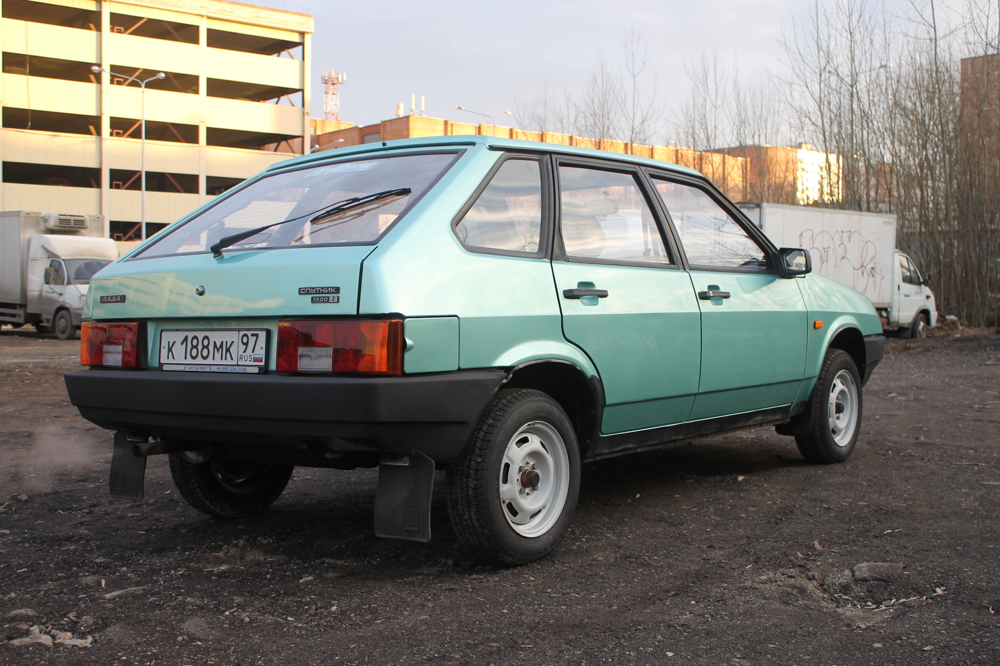

ВАЗ-2108 «Спутник» (простореч.названия «восьмёрка» или «зубило») — советский и российский переднеприводной автомобиль II группы малого класса с кузовом типа трёхдверный хетчбэк. Разработан и серийно выпускался на Волжском автомобильном заводе в 1984—2003 годах. Представлял собой базовую модель в семействе моделей Лада «Спутник». C 2004 года на конвейере автомобиль был заменён рестайлинговой моделью ВАЗ-2113.
Переднеприводная схема давно привлекала автомобильных конструкторов, но массовый переход в мире на такие модели начался лишь в середине 1970-х годов. При этом даже в условиях европейской дорожной сети их распространение сдерживалось недостаточной проработанностью конструкции и технологии узлов привода колёс, рулевого управления, подвески силового агрегата. Однако поперечное расположение силового агрегата и передние ведущие колёса при существовавшем тогда уровне развития техники уже позволяли сделать автомобиль малого класса компактнее и легче обычного. Проект переднеприводного автомобиля начал разрабатываться Волжским автозаводом в 1971 году. С 1971 по 1977 годы на заводе было спроектировано и построено несколько опытных образцов переднеприводных машин. Проектирование ВАЗ—2108 начато в мае 1977 года. 17 февраля 1978 года Министерство автомобильной промышленности СССР утвердило техническое задание ВАЗу на семейство переднеприводных автомобилей. К этому моменту на заводе уже имелась вполне отработанная концепция будущей машины. Первый прототип ВАЗ-2108 был готов в конце 1978 года, а в феврале 1979-го начались его лабораторные испытания. Некоторые узлы и агрегаты ВАЗ-2108 разрабатывались совместно с западными компаниями Porsche и UTS. 29 мая 1979 года вышло постановление Совета министров СССР № 470 «О разработке и освоении на Волжском автозаводе семейства переднеприводных автомобилей». Официально о создании в Тольятти новой модели легкового автомобиля объявил министр автомобильной промышленности В. Н. Поляков в своём выступлении на XXVI съезде КПСС в феврале 1981 года. Он сообщил, что в одиннадцатой пятилетке на ВАЗе будет создана машина с передними ведущими колёсами, не связанная по конструкции и технологии с выпускаемыми «Жигулями» классической компоновки.
Производство первой партии из 2000 товарных автомобилей было начато 17 декабря 1984 года, 22 декабря 1984 первые серийные ВАЗ-2108 сошли с конвейера, а в первой половине 1985 года автомобили стали поступать в магазины по цене 8345 руб. 80 % всех средств, выделяемых могущественному ГКНТ (Государственному комитету по науке и технике) для закупки лицензий и новых образцов оборудования для всех отраслей промышленности СССР, в то время осваивал ВАЗ. Всего было закуплено около 20. В частности, у фирмы Lucas — на передние дисковые тормоза и вакуумный усилитель тормозов, у Zahnradfabrik — на реечный рулевой механизм и синхронизаторы коробки передач, у Automotiv Prodax — на сцепление, у Way-Assauto — на стойки передней подвески, у Hardy Spicer — на шарниры равных угловых скоростей, у Solex — на карбюратор. Позднее купили балку задней подвески у Volkswagen.У Michelin приобрели лицензию и технологическое оборудование для производства бескамерной радиальной шины с металлокордом размерности 165/70R13 (позднее к ней добавился вариант с шириной профиля в 175 мм). Технологический партнёр Fiat — фирма UTS — оказывала ВАЗу помощь в организации нового производства и налаживании оборудования ВАЗ-2108 вписан в тайм-линию историй Porsche под названием The Lada Samara −1984.
Кузов ВАЗ-2108 имеет трёхдверную цельнометаллическую сварную несущую конструкцию. Автомобиль обладает вариантами как пассажирского, так и грузопассажирского кузова. Все детали и узлы кузова, кроме навесных, составляют собой единое целое, сваренное контактной точечной сваркой, а сильно нагруженные детали дополнительно приварены электродуговой сваркой. Основные детали кузова штампуют из листовой малоуглеродистой стали. Толщина основных деталей кузова составляет 0,8 мм, а наружных панелей дверей и передних крыльев — 0,7 мм, усилителей 1-1,2 мм. Мелкие детали штампуют из стали толщиной 0,8-2,5 мм.
На автомобиле установлен четырёхцилиндровый четырёхтактный карбюраторный или инжекторный двигатель объёмом цилиндров 1100 см³, 1300 см³ или 1500 см³ (в зависимости от модификации) с рядным расположением цилиндров с распредвалом в головке цилиндров с приводом от зубчатого ремня. Двигатель специально спроектирован для поперечного расположения на переднеприводном автомобиле. Двигатель в сборе с коробкой передач и сцеплением образует силовой агрегат, установленный в моторном отсеке на трёх эластичных опорах.
В зависимости от комплектации автомобиля устанавливается четырёх- или пятиступенчатая коробка передач. Полость картера коробки передач объединена с главной передачей. Крутящий момент от главной передачи передаётся на ведущие колёса через приводы передних колёс со ШРУСами. На автомобиль устанавливается рулевой механизм реечного типа.
Передний тормозной механизм — дисковый, открытый. Задний — барабанный, с автоматической регулировкой зазора между колодками и барабаном. На ВАЗ-2108 применяется однопроводная схема соединений (минус на массе). На модификации ВАЗ-21083 устанавливается микропроцессорная система управления двигателем.
На автомобиле установлена подвеска типа «качающаяся свеча» или МакФерсон. На автомобиле установлена торсионно-рычажная подвеска задних колёс. Направляющим устройством подвески являются два продольных рычага, соединённых между собой упругим соединителем. Независимость хода каждого колеса обеспечивается за счёт скручивания усилителя, имеющего U-образное сечение, которое обладает большой жёсткостью на изгиб и малой — на кручение. Амортизатор задней подвески гидравлический телескопический двухстороннего действия. Упругие элементы подвески состоят из пружины и буфера хода сжатия. Пружина выполнена из пружинной стали круглого сечения. Она установлена на амортизаторе. Пружины задней подвески, как и передней, под контрольной нагрузкой по длине делятся на два класса — А и Б. Пружины класса А маркируются жёлтой краской по внешней стороне средних витков, класса Б — зелёной.
Кабриолет на базе ВАЗ-2108
Полноприводный среднемоторный ВАЗ-29084, 1985
В середине 1980-х завод построил несколько среднемоторных и переднемоторных прототипов раллийных машин на базе ВАЗ-2108, с целью в дальнейшем омологировать их по Группе B. Это ВАЗ-29084 с полным приводом, ВАЗ-29081 с задним приводом. Но они остались в единичных экземплярах, из-за отмены Группы B в конце 1986 года.
Машина участвовала во всесоюзных гонках СССР, после его распада участвовала в кольцевых чемпионатах России в классах «Туризм» («Туризм — 1600») и «Супертуризм». С 1998 по 2002 годы — участник Национальной Гоночной Серии «Кубок Лада».
Всего выпущено 884 657 машин этой модели.
Ранний вариант: короткое крыло
Поздний вариант: длинное крыло

Варианты салона: Ранний(низкая панель), поздний(высокая панель)